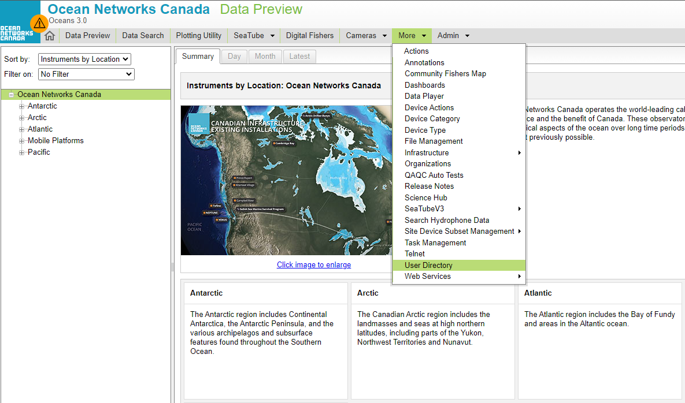

Getting Started
Contents
To navigate directly to a specific part of the documentation (use the internal links), right-click on the section you're interested and select "Open" or "Open in New Tab".
Requirements
The MATLAB API client has been tested on MATLAB R2022b.
Basic unit testing on MATLAB R2018a indicates general compatibility with this version. While the client may work on versions newer than R2018a, compatibility with versions other than R2022b has not been explicitly verified.
MATLAB versions older than R2018a are not supported.
Before using the library
You'll need a token to access all the web services.
How to get a token?
- Register for an Oceans 3.0 account at https://data.oceannetworks.ca/Registration.
- Log into your account at https://data.oceannetworks.ca by clicking the Log In link.
- Click the Profile link (top right corner) to access your account profile.
- Access the Web Services API tab and click Copy Token.
- If you forget your token, you can always find it in your Oceans 3.0 account profile.
Then, use the token to create an Onc object like
- Directly, run
onc = Onc('YOUR TOKEN HERE'); - Save the token in a file named 'TOKEN' and run
onc = Onc(readToken);
- with other parameters like output path
onc = Onc(readToken, 'outPath', 'YOUR_DESTINATION_FOLDER');
For more information about creating an Onc object, see ONC Class
Note
- It's important to check that you are using the latest version. Outdated version may results in bugs.
- When you run Onc() to create an Onc object, it will run a version check and prints out version outdated warning if fails. How to update to latest version.
General Tutorial - 1. Searching with discovery services
Check sections in the left panel for full documentation, source code and examples on each service.
To download data from Ocean Networks Canada's database (Oceans 3.0) , you need to specify the type of data you are interested in and where in particular (i.e. location, from specific instrument (device)) it originates from. In the Oceans 3.0 API, there are a unique codes that identify every location, device, property, data product type, etc. You include these codes in a group of filters to retrieve the information you're interested in. The Oceans 3.0 API Discovery services allow you to explore the hierarchy of ONC's database to obtain the codes required for your filters to obtain the information/data you are interested in (they work like a "search" function).
The example below uses the getLocations method, which is querying the locations database tables that include "Bullseye" in their name (i.e. "Clayoquot Slope Bullseye Vent"). It returns a list with all locations that match the search filters provided.
Using ONC library
% 1. Define your filter parameter params = {'locationName', 'Bullseye'}; % 2. Call methods in the onc library onc.getLocations(params)
Using MATLAB's HTTP library
% 1. Define your filter parameter params.locationName = 'Bullseye'; params.token = 'YOUR TOKEN HERE'; % or readToken % 2. Prepare HTTP request request = matlab.net.http.RequestMessage; url = 'https://data.oceannetworks.ca/api/locations'; uri = matlab.net.URI(url); uri.Query = matlab.net.QueryParameter(params) % prepare MATLAB request options options = matlab.net.http.HTTPOptions(); options.ConnectTimeout = 120; % send request response = request.send(uri,options); response.Body.Data
ans = struct with fields:
deployments: 38
locationName: 'Bullseye'
depth: 1.2569e+03
bbox: [1x1 struct]
description: ' Bullseye is a location at Clayoquot Slope, where gas hydrates, seafloor cold seeps, and hydrate dynamics are observed.'
hasDeviceData: 1
lon: -126.8480
locationCode: 'NC89'
hasPropertyData: 0
lat: 48.6706
dataSearchURL: 'https://data.oceannetworks.ca/DataSearch?location=NC89'
Each entry of this list contains more meta data information for that location, e.g. the locationName, the geographical coordinates and depth, a description field and the URL for Oceans 3.0 Data Search tool. The parameter locationCode contains the string "NC89", which is needed for the next steps.
1.1 What device categories are available here at the location NC89?
Using ONC library
% 1. Define your filter parameter params = {'locationCode', 'NC89'}; % 2. Call methods in the onc library onc.getDeviceCategories(params)
Using MATLAB's HTTP library
% 1. Define your filter parameter params.locationCode = 'NC89'; params.token = 'YOUR TOKEN HERE'; % or readToken % 2. Prepare HTTP request request = matlab.net.http.RequestMessage; url = 'https://data.oceannetworks.ca/api/deviceCategories'; uri = matlab.net.URI(url); uri.Query = matlab.net.QueryParameter(params) % prepare MATLAB request options options = matlab.net.http.HTTPOptions(); options.ConnectTimeout = 120; % send request response = request.send(uri,options); response.Body.Data
ans = 13×1 struct
1.2 What properties are available for the device category CTD at this location NC89?
Using ONC library
% 1. Define your filter parameter params = {'locationCode', 'NC89', ... 'deviceCategoryCode', 'CTD'}; % 2. Call methods in the onc library onc.getProperties(params)
Using MATLAB's HTTP library
% 1. Define your filter parameter params.locationCode = 'NC89'; params.deviceCategoryCode = 'CTD'; params.token = 'YOUR TOKEN HERE'; % or readToken % 2. Prepare HTTP request request = matlab.net.http.RequestMessage; url = 'https://data.oceannetworks.ca/api/properties'; uri = matlab.net.URI(url); uri.Query = matlab.net.QueryParameter(params) % prepare MATLAB request options options = matlab.net.http.HTTPOptions(); options.ConnectTimeout = 120; % send request response = request.send(uri,options); response.Body.Data
ans = 8×1 struct
1.3 What data product types are available for the device category CTD at this location NC89?
Using ONC library
% 1. Define your filter parameter params = {'locationCode', 'NC89', ... 'deviceCategoryCode', 'CTD'}; % 2. Call methods in the onc library onc.getDataProducts(params)
Using MATLAB's HTTP library
% 1. Define your filter parameter params.locationCode = 'NC89'; params.deviceCategoryCode = 'CTD'; params.token = 'YOUR TOKEN HERE'; % or readToken % 2. Prepare HTTP request request = matlab.net.http.RequestMessage; url = 'https://data.oceannetworks.ca/api/dataProducts'; uri = matlab.net.URI(url); uri.Query = matlab.net.QueryParameter(params) % prepare MATLAB request options options = matlab.net.http.HTTPOptions(); options.ConnectTimeout = 120; % send request response = request.send(uri,options); response.Body.Data
ans = 9×1 struct
General Tutorial - 2. Downloading data
Check sections in the left panel for full documentation, source code and examples on each service.
Once you determine the exact filters that identify the information you are interested in, there are different methods available to download data.
- Near real-time scalar data sensor readings for a given timeframe
- Near real-time raw data for a given timeframe
- Download archived files containing raw data or processed data
- Download data products that are also available via Oceans 3.0 Data Search Tool
2.1 Near real-time scalar data download
In this example we want to download one minute of Pressure sensor data from a CTD at location "Bullseye" (locationCode: NC89)
Using ONC library
% 1. Define your filter parameter params = {'locationCode', 'NC89', ... 'deviceCategoryCode', 'CTD', ... 'dateFrom', '2017-01-20T00:00:00.000Z', ... 'propertyCode', 'pressure', ... 'dateTo', '2017-01-20T00:01:00.000Z', ... }; % 2. Call methods in the onc library result = onc.getDirectByLocation(params);
Using MATLAB's HTTP library
% 1. Define your filter parameter params.locationCode = 'NC89'; params.deviceCategoryCode = 'CTD'; params.dateFrom = '2017-01-20T00:00:00.000Z'; params.propertyCode = 'pressure'; params.dateTo = '2017-01-20T00:01:00.000Z'; params.token = 'YOUR TOKEN HERE'; % or readToken % 2. Prepare HTTP request request = matlab.net.http.RequestMessage; url = 'https://data.oceannetworks.ca/api/scalardata/location'; uri = matlab.net.URI(url); uri.Query = matlab.net.QueryParameter(params) % prepare MATLAB request options options = matlab.net.http.HTTPOptions(); options.ConnectTimeout = 120; % send request result = request.send(uri,options);
% 3. Return the field names of the query to get a sense what is contained in your returned message
fieldnames(result)
ans = 6×1 cell'citations'
'messages'
'next'
'parameters'
'queryUrl'
'sensorData'
% 4. Read the data from parameter "sensorData" - this is the data from your requested "Pressure" sensor
struct2table(result.sensorData(1).data)
ans = 240×3 table
⋮
2.2 Near real-time raw data readings
In this example we want to download one minute of raw data from a CTD at location "Bullseye" (locationCode: NC89)
Using ONC library
% 1. Define your filter parameter params = {'locationCode', 'NC89', ... 'deviceCategoryCode', 'CTD', ... 'dateFrom', '2020-06-20T00:00:00.000Z', ... 'dateTo', '2020-06-20T00:01:00.000Z', ... }; % 2. Call methods in the onc library result = onc.getDirectRawByLocation(params);
Using MATLAB's HTTP library
% 1. Define your filter parameter params.locationCode = 'NC89'; params.deviceCategoryCode = 'CTD'; params.dateFrom = '2020-06-20T00:00:00.000Z'; params.dateTo = '2020-06-20T00:01:00.000Z'; params.token = 'YOUR TOKEN HERE'; % or readToken % 2. Prepare HTTP request request = matlab.net.http.RequestMessage; url = 'http://data.oceannetworks.ca/api/rawdata/location'; uri = matlab.net.URI(url); uri.Query = matlab.net.QueryParameter(params) % prepare MATLAB request options options = matlab.net.http.HTTPOptions(); options.ConnectTimeout = 120; % send request result = request.send(uri,options);
% 3. Return the dictionary keys (fields) of the query to get a sense what is contained in your returned message
fieldnames(result)
ans = 7×1 cell'citations'
'data'
'messages'
'metadata'
'next'
'outputFormat'
'queryUrl'
% 4. Read the data as a table
struct2table(result.data)
ans = 60×3 table
2.2.1. Downloading more data
Pagination of response due to too many data rows
If the row of the data is above 100,000, not all the data will be returned. The rest of the data can be queried based on the next key in the response.
- If you use onc library.
getDirectRawByLocation supports a boolean allPages parameter. When set to True, it will try to retrieve all the pages.
- If you use MATLAB's HTTP library.
You have to manually query the next pages until the next key in the response json is None, and concatenate all the data together.
Using ONC library
% 1. Define your filter parameter with a longer date range (2 days of data) paramsLongerRange = {'locationCode', 'NC89', ... 'deviceCategoryCode', 'CTD', ... 'dateFrom', '2020-06-20T00:00:00.000Z', ... 'dateTo', '2020-06-22T00:00:00.000Z', ... }; % 2. Call methods in the onc library result = onc.getDirectRawByLocation(paramsLongerRange, 'allPages', true) struct2table(result.data)
Data size is greater than the row limit and will be downloaded in multiple pages.
Estimated approx. 1 pages
Estimated approx. 5.79 seconds to complete
(100000 samples) Downloading page 2...
(172796 samples) Completed in 2.25 seconds.
result = struct with fields: citations: [1×1 struct]
data: [1×1 struct]
messages: []
metadata: [1×1 struct]
next: []
outputFormat: 'array'
queryUrl: 'https://data.oceannetworks.ca/api/rawdata?locationCode=NC89&deviceCategoryCode=CTD&dateFrom=2020-06-20T00:00:00.000Z&dateTo=2020-06-22T00:00:00.000Z&method=getByLocation&token=YOUR_TOKEN'
ans = 172796×3 table
⋮
Using MATLAB's HTTP library
% 1. Define your filter parameter paramsLongerRange.locationCode = 'NC89'; paramsLongerRange.deviceCategoryCode = 'CTD'; paramsLongerRange.dateFrom = '2020-06-20T00:00:00.000Z'; paramsLongerRange.dateTo = '2020-06-22T00:00:00.000Z'; paramsLongerRange.token = 'YOUR TOKEN HERE'; % or readToken % 2. Prepare HTTP request (the url is still the same) request = matlab.net.http.RequestMessage; url = 'http://data.oceannetworks.ca/api/rawdata/location'; uri = matlab.net.URI(url); uri.Query = matlab.net.QueryParameter(paramsLongerRange); % prepare MATLAB request options options = matlab.net.http.HTTPOptions(); options.ConnectTimeout = 120; % send request result = request.send(uri,options);
% 4. Read the data as a table
struct2table(result.Body.Data.data)
ans = 100000×3 table
⋮
Now check the parameter field "next"
result.Body.Data.next result.Body.Data.next.parameters
ans = struct with fields:parameters: [1×1 struct] url: 'https://data.oceannetworks.ca/api/rawdata/location?dateTo=2020-06-22T00%3A00%3A00.000Z&locationCode=NC89&deviceCategoryCode=CTD&dateFrom=2020-06-21T03%3A46%3A42.044Z&token=YOUR_TOKEN'ans = struct with fields:dateTo: '2020-06-22T00:00:00.000Z' locationCode: 'NC89' deviceCategoryCode: 'CTD' dateFrom: '2020-06-21T03:46:42.044Z' token: 'YOUR_TOKEN'
Update the dateFrom parameter to get the next page
paramsLongerRange.dateFrom = result.Body.Data.next.parameters.dateFrom; uri.Query = matlab.net.QueryParameter(paramsLongerRange); result = request.send(uri,options); struct2table(result.Body.Data.data)
ans = 72796×3 table
⋮
Now check the parameter field "next" again
result.Body.Data.next
ans =
[]
2.3. Downloading archived files
A faster way to download data products and processed data files that are available in Oceans 3.0 (if it suits your needs) is to leverage how ONC scripts auto-generate and archive data products of different types at set time intervals. You can directly download these data product files from our files archive, as long as you know their unique filename.
In the following example, we get the list of archived files available for a camera (deviceCategoryCode: VIDEOCAM) at Ridley Island (locationCode: RISS) for 5-minute timerange.
Using ONC library
% 1. Define your filter parameter params = {'locationCode', 'RISS', ... 'deviceCategoryCode', 'VIDEOCAM', ... 'dateFrom', '2016-12-01T00:00:00.000Z', ... 'dateTo', '2016-12-01T00:05:00.000Z', ... }; % 2. Call methods in the onc library result = onc.getListByLocation(params); result.files
ans = 4×1 cell'AXISQ6044PTZACCC8E334C53_20161201T000000.000Z.mp4'
'AXISQ6044PTZACCC8E334C53_20161201T000000.000Z.an'
'AXISQ6044PTZACCC8E334C53_20161201T000000.000Z-VideoQAQCResults.an'
'AXISQ6044PTZACCC8E334C53_20161201T000001.000Z.jpg'
Using MATLAB's HTTP library
% 1. Define your filter parameter params = struct(); params.locationCode = 'RISS'; params.deviceCategoryCode = 'VIDEOCAM'; params.dateFrom = '2016-12-01T00:00:00.000Z'; params.dateTo = '2016-12-01T00:05:00.000Z'; params.token = 'YOUR TOKEN HERE'; % or readToken % 2. Prepare HTTP request (the url is still the same) request = matlab.net.http.RequestMessage; url = 'https://data.oceannetworks.ca/api/archivefile/location'; uri = matlab.net.URI(url); uri.Query = matlab.net.QueryParameter(params); % 3. prepare MATLAB request options options = matlab.net.http.HTTPOptions(); options.ConnectTimeout = 120; % 4. send request result = request.send(uri,options); result.Body.Data.files
ans = 4×1 cell'AXISQ6044PTZACCC8E334C53_20161201T000000.000Z.mp4'
'AXISQ6044PTZACCC8E334C53_20161201T000000.000Z.an'
'AXISQ6044PTZACCC8E334C53_20161201T000000.000Z-VideoQAQCResults.an'
'AXISQ6044PTZACCC8E334C53_20161201T000001.000Z.jpg'
Once we have the file names, you can use the method "getFile()" to download individual files:
Using ONC library
% 1. Call methods in the onc library with the filename. The file is downloaded in the output folder. onc.getFile('AXISQ6044PTZACCC8E334C53_20161201T000001.000Z.jpg', 'overwrite', true)
Downloading file "AXISQ6044PTZACCC8E334C53_20161201T000001.000Z.jpg"... [==================================================] 100% File was downloaded to "AXISQ6044PTZACCC8E334C53_20161201T000001.000Z.jpg"ans = struct with fields:url: 'https://data.oceannetworks.ca/api/archivefiles?method=getFile&filename=AXISQ6044PTZACCC8E334C53_20161201T000001.000Z.jpg&token=YOUR_TOKEN' status: 'completed' size: 113511 downloadTime: 0.8380 file: "AXISQ6044PTZACCC8E334C53_20161201T000001.000Z.jpg"
Using MATLAB's HTTP library
% 1. Define your filter parameter with the filename params.filename = 'AXISQ6044PTZACCC8E334C53_20161201T000001.000Z.jpg'; params.token = 'YOUR TOKEN HERE'; % or readToken % 2. Define your base url for this query url_location = 'https://data.oceannetworks.ca/api/archivefile/download'; request = matlab.net.http.RequestMessage; uri = matlab.net.URI(url_location); uri.Query = matlab.net.QueryParameter(params); % 3. prepare MATLAB request options options = matlab.net.http.HTTPOptions(); options.ConnectTimeout = 120; % 4. send request result = request.send(uri,options); % 5. Save the file % f = fopen(fullPath, 'w','n','ISO-8859-1'); % if f ~= -1 % fwrite(f, char(dataToWrite)); % end
2.4 Downloading data products
Other than using Oceans 3.0 Data Search, we can request the ONC server to generate a data product. This is done through the data product delivery services methods.
Hint
This service should ONLY be used when the requested files are not already provided using the ArchiveFiles services (see 2.3 above). The data product delivery services will re-generate files using ONC's web machines and this process can often take very long time to generate these results. If you request data files for very long-time ranges and large file sizes, ONCs system will sometimes slow down and stall and requires some manual actions.
We therefore encourage you to check other services before requesting data through this service. If you are unsure what to use feel free to contact u.
This process will require three steps before you will be able to see the downloaded data product on your computer:
- Request the data.
- Run the Request.
- Download the data.
The following example downloads two PNG files with plots for 30 minutes of data from a CTD (find them in the "output" folder beside this jupyter notebook). The filter includes codes for location, deviceCategory, and dataProduct, as well as the file extension and a time interval. They also include a couple of filters to configure this specific data product type (starting with the "dpo_" prefix) which can be obtained from the Data Product Options documentation. You can download more than 120 different types of data products including audio & video.
Using ONC library
ONCs library contains all three steps (methods) in one call. So this is the preferred library to use over the requests library.
% 1. Define your filter parameter params = {'locationCode', 'NC89', ... 'deviceCategoryCode', 'CTD', ... 'dataProductCode', 'TSSP', ... 'extension', 'png', ... 'dateFrom', '2017-01-19T00:00:00.000Z', ... 'dateTo', '2017-01-19T00:30:00.000Z', ... 'dpo_qualityControl', '1', ... 'dpo_resample', 'none', ... }; % 2. Call methods in the onc library result = onc.orderDataProduct(params)
Requesting data product... Request Id: 18690549 Estimated File Size: 185 kB Estimated Processing Time: 20 s To cancel this data product, visit url: https://data.oceannetworks.ca/api/dataProductDelivery?method=cancel&token=YOUR_TOKEN&dpRequestId=18690549 queued data product running....... complete Downloading data product files with runId 40531301... Search complete, waiting on the file system to synchronize (ClayoquotSlope_Bullseye_ConductivityTemperatureDepth_20170119T000000Z_20170119T003000Z-clean.png).... Downloaded "ClayoquotSlope_Bullseye_ConductivityTemperatureDepth_20170119T000000Z_20170119T003000Z-clean.png" Downloaded "ClayoquotSlope_Bullseye_ConductivityTemperatureDepth_20170119T000000Z_20170119T003000Z-clean_PNG_META.xml" Download process finished. Total run time: 0.17 seconds Total download Time: 0.688 seconds 2 files (124.37 KB) downloadedresult = struct with fields:downloadResults: [1×2 struct] stats: [1×1 struct]
% display results
downloadResults1 = result.downloadResults(1)
downloadResults2 = result.downloadResults(2)
stats = result.stats
downloadResults1 = struct with fields:url: 'https://data.oceannetworks.ca/api/dataProductDelivery?method=download&token=YOUR_TOKEN&dpRunId=40531301&index=1' status: 'complete' statusCode: OK size: 111106 file: 'ClayoquotSlope_Bullseye_ConductivityTemperatureDepth_20170119T000000Z_20170119T003000Z-clean.png' index: '1' downloaded: 1 requestCount: 6 fileDownloadTime: 0.3850downloadResults2 = struct with fields:url: 'https://data.oceannetworks.ca/api/dataProductDelivery?method=download&token=YOUR_TOKEN&dpRunId=40531301&index=meta' status: 'complete' statusCode: OK size: 13264 file: 'ClayoquotSlope_Bullseye_ConductivityTemperatureDepth_20170119T000000Z_20170119T003000Z-clean_PNG_META.xml' index: 'meta' downloaded: 1 requestCount: 1 fileDownloadTime: 0.3030stats = struct with fields:runTime: 0.1710 downloadTime: 0.6880 requestCount: 17 totalSize: 124370
Using MATLAB's HTTP library
% 1. Define your filter parameter with the filename params = struct(); params.locationCode = 'NC89'; params.deviceCategoryCode = 'CTD'; params.dataProductCode = 'TSSP'; params.extension = 'png'; params.dateFrom = '2017-01-19T00:00:00.000Z'; params.dateTo = '2017-01-19T00:30:00.000Z'; params.dpo_qualityControl = '1'; params.dpo_resample = 'none'; params.token = readToken; % 2. Define your base url for this query url_location = 'https://data.oceannetworks.ca/api/dataProductDelivery/request'; request = matlab.net.http.RequestMessage; uri = matlab.net.URI(url_location); uri.Query = matlab.net.QueryParameter(params); % 3. prepare MATLAB request options options = matlab.net.http.HTTPOptions(); options.ConnectTimeout = 120; % 4. send request requestResponse = request.send(uri,options); result = requestResponse.Body.Data
result = struct with fields:citations: [1×1 struct] disclaimer: 'Software Developers are implementing estimates of processing times and file sizes for data requests. These are extremely rough to begin with, but bear with us. We expect these estimates will gradually improve.' dpRequestId: 18690550 estimatedFileSize: '185 kB' estimatedProcessingTime: '20 s' messages: [] queryPids: 25848930 queryURL: 'https://data.oceannetworks.ca/api/dataProductDelivery/request?locationCode=NC89&deviceCategoryCode=CTD&dataProductCode=TSSP&extension=png&dateFrom=2017-01-19T00:00:00.000Z&dateTo=2017-01-19T00:30:00.000Z&token=YOUR_TOKEN&dpo_resample=none&dpo_resample=none&dpo_qualityControl=1'
%% requests continued % Run the request % Note: you have to execute this cell multiple times until the return shows the "status": "complete" % Note: Depending on your request, you can have more than one file ('fileCount'). % You will need to individually download these files by using the index parameter. url_run = 'https://data.oceannetworks.ca/api/dataProductDelivery/run'; requestID = requestResponse.Body.Data.dpRequestId; params_run = struct(); params_run.dpRequestId = requestID; params_run.token = readToken; request = matlab.net.http.RequestMessage; uri = matlab.net.URI(url_run); uri.Query = matlab.net.QueryParameter(params_run); runResponse = request.send(uri,options); result = runResponse.Body.Data
result = struct with fields:dpRunId: 40531302 fileCount: 0 status: 'queued'
%% requests continued
% Find the RunID for the next step
runId = response(1).dpRunId
runId = 40531302
%% requests continued % 3. Download the data url_download = 'https://data.oceannetworks.ca/api/dataProductDelivery/download'; params_download = struct(); params_download.dpRunId = runId; params_download.token = readToken; params_download.index = '1'; request = matlab.net.http.RequestMessage; uri = matlab.net.URI(url_download); uri.Query = matlab.net.QueryParameter(params_download); % Start - Rerun this part until the response code is 200. downloadResponse = request.send(uri,options); result = downloadResponse.Body.Data responseCode = double(downloadResponse.StatusCode) % End - Rerun this part until the response code is 200. % %downloadResponse.Headers has field Content-Disposition, % %and Content-Disposition has the format "attachement; filename=XXX.png" % contentDisposition = char(downloadResponse.Header.getFields('Content-Disposition').Value); % filename = contentDisposition(23:end); % imwrite(downloadResponse.Body.Data, filename); % %Use other download functions if content type is not png/jpg
result = struct with fields:message: 'Running' status: 'running'responseCode = 202
Another option to get the data
Obtain your downloads from your user FTP directory (More -> User Directory) in Oceans 3.0. Navigate to the folder that contains the runId: You will see the files in this folder.
